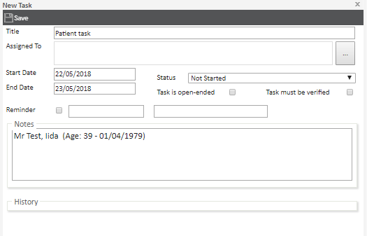
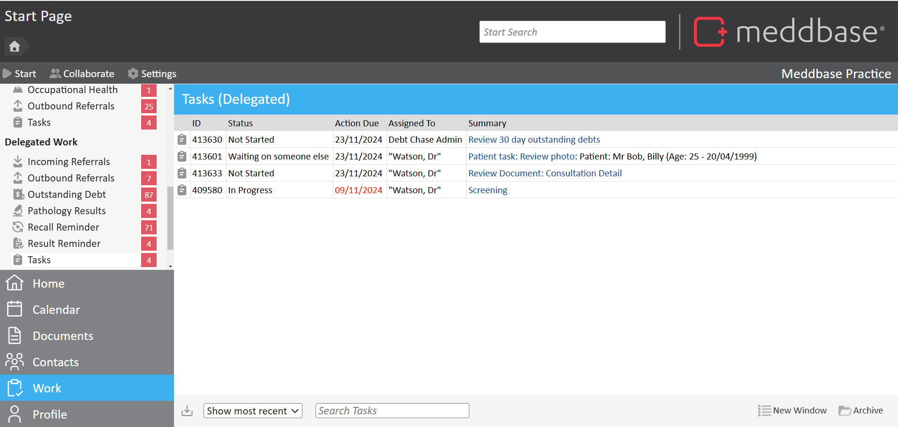
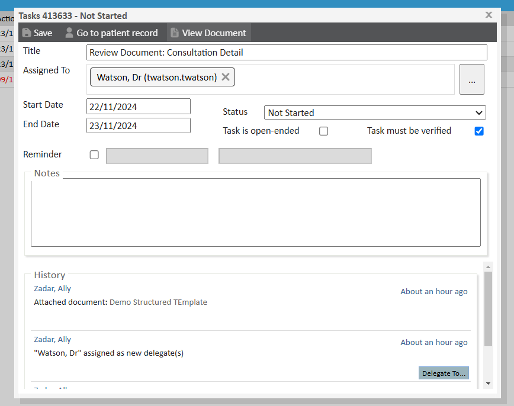

Tasks are a Work Type in Meddbase, designed to facilitate communication and collaboration within the system. They can include reminders and link to various records, enabling users to manage workflows efficiently. They can also be used to send reminders to self.
What’s the purpose of this article?
This article explains how to create, manage, and access tasks in Meddbase, highlighting their functionality and integration points. The article is broken down into the following sections:
What are tasks in Meddbase?
Creating and assigning a task
Where can tasks be viewed?
Interacting with and completing a task
Re-opening a task
What are tasks in Meddbase?
Tasks are a versatile Work Type that enable users to:
Set reminders.
Communicate with other users within the system.
Link tasks to specific records (e.g., patient records, company records, documents, appointments, or invoices).
Send Prescription Requests outside of an Appointment to Prescribers.
Creating and assigning a task
To create a task:
Locate and click the ‘Assign Task’ button from any supported location (e.g., Start Page, Patient Records).
Complete the New Task dialogue box by defining:
Assigned to: Who will handle the task.
Start and Due Dates: Specify the task’s timeline.
Reminder Settings: Set a specific date and time for reminders.
Task Status: Open, in progress, or other relevant statuses.
Open-Ended Option: Mark if the task has no specific end date.
Verification Requirement: Indicate if the task needs verification before being marked as complete.
Notes: Include additional information or instructions.

Click Save once done.
Where can tasks be viewed?
Tasks appear in different locations based on if it was assigned to you, or you assigned it to another user.
Tasks assigned to you
The Tasks inbox is located on the Start Page under the Work section. You will see a list of tasks assigned to you, or a role group you are in.
Tasks you assigned to others
The Tasks inbox is located on the Start Page under the Delegated Work section. Tasks You will see a list of tasks you have assigned to other users or rolegroups.

Interacting with and completing a task
Opening a Task
Once a task has been assigned to you, locate it in Work> Tasks and click on the item to open it.
Within the task, you will find back links that allow you to navigate to the location where the task was generated. Tasks linked to a record (e.g., a patient or appointment) will have quick access buttons to navigate directly to the related item.

Updating the Task Status
After interacting with or completing the task, update its status to keep the delegate informed about progress. Available status options include:
In Progress: Use this when work on the task has started.
Completed: Select this once the task is finished.
Waiting on Someone Else: Choose this if action is required from another person.
Deferred: Use this if the task has been postponed.
Saving the Task
Once you have set the appropriate status, press Save to confirm your update.
If you set the status to Completed and press Save, you will be prompted to confirm whether the task has been fully completed and can be removed from your list.
Prescription and Repeat Prescription Tasks
Prescription Tasks in Meddbase streamline the process of generating prescriptions, including repeat prescriptions and ePrescriptions. These tasks allow users to assign responsibilities, track progress, and create accurate prescription records outside of the context of an appointment. To learn how to create, review, and action Prescription Tasks, including step-by-step instructions and key system features, please refer to Working with Prescription Tasks.
Re-opening a task
It is possible to retrieve archived tasks. You will need to be a system administrator and in the Task Admin role group. If you need to re-open a completed or deleted task: